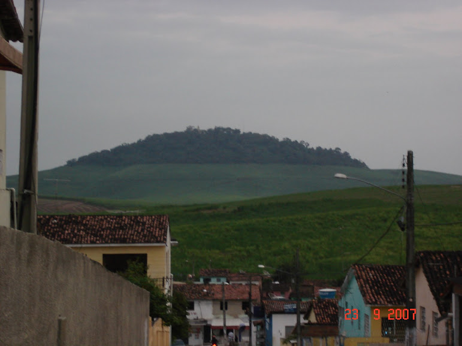
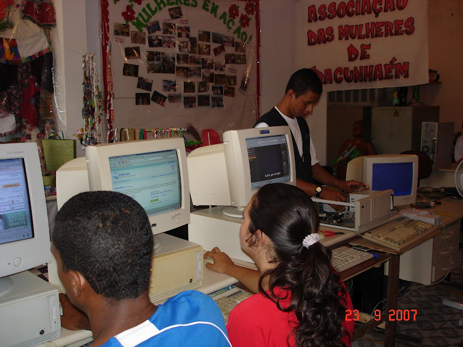

Marcos Egito, 33, mora no bairro de João Paulo II, em Camaragibe - uma cidade da região metropolitana do Recife. Hoje trabalha como educador social de software livre, no Centro Marista circuito jovem do Recife. "Estava fazendo Sistemas de Informação, mas tranquei o curso e vou fazer pedagogia!", comenta.
Também já trabalhou nos Trapeiros de Emaús, uma organização não governamental internacional que trabalha com pessoas que não possuem acesso ao emprego formal. "Nos Trapeiros de Emaús passei doze anos, fiz parte da diretoria. Começamos um curso de informática com as sucatas de computadores que recebíamos, fiz parte da comissão de jovens, representei a instituição no conselho do meio ambiente em Camaragibe. Foi lá que tive contato com Software livre, passei a participar do GUD-PE (grupo de usuários Debian).Tínhamos uma parceria com Banco do Brasil e fazíamos manutenção de Telecentros, diz".
Atualmente, Marcos trabalha no Centro de Recondicionamento de Computares [5](CRC) Recife, participa do Grupo de Usuários Python de Pernambuco [6] (Pug-PE), da Robótica Livre [7], além de ser educador e militante de Softwar Livre, e voluntário de algumas instituições.
No final de 2010, Marcos junto com outro educador e alguns educandos fizeram um grupo de estudo de programação, batizado de Konesans [8] uma palavra em crioulo haitiano que significa difusão de conhecimento. Atualmente estão sem sede fixa, mas pretendem começar uma oficina de manutenção preventiva de computadores na periferia do bairro do Timbí, em Camaragibe. Marcos conversou com o MutGamb [9] sobre como chegou até a Metareciclagem [10], quais são suas espectativas daqui em diante, além de compartilhar o convite da II Expotec prevista para o dia 28 de junho [11] e resumo do I hackday do Grupo de usuários de Python de Pernambuco [12].
Qual seu link com a Metareciclagem?
Marcos: Conheci o termo Metarec muito tempo atrás, não lembro quando e como. Lembro que estava fazendo pesquiza na web e encontrei o site Estúdio Livre, e lá vi o termo. Busquei saber o que era, e comecei a fazer algumas coisas. Nessa época ainda trabalhava nos Trapeiros de Emaús, tentamos montar um museu do computador, pois recebíamos muitos PC's antigões, pintávamos os gabinetes, fazíamos muitas gambitec's, era muito divertido. Foi quando surgiu a parceria com o Banco do Brasil e uma vez por mês botavamos o pé na estrada, com uma kombi cheia de ferramentas, algumas peças de computador e muita boa vontade e bom humor. Fazíamos manutenção nos Telecentros que o Banco do Brasil doava as máquinas. Fomos para o Condado, Araçoiaba, Goiana e Tracunhaém. No passado chegou no CRC o Isaac, que conheci uma vez em um encontro de Softawre Livre, e das listas de discussão. Ele me apresentou a Lista da Metareciclagem, e tive mais informação do que de fato é a metarec. No CRC tentamos aplicá-la ao fazermos artefatos para Robótica Livre, ao tentarmos fazer objetos com as sucatas, ao mostrarmos aos educandos a nova forma de pensar, agir e ver o mundo.
Conte um pouco sobre o Telecentro da Cidade de Tracunhaém
Marcos: O Isaac abriu uma thread na lista da metarec que me tocou a compartilhar saudosos momentos, imortalizados pelas fotos em minha memória. Comecei a subir as fotos, para contar um pouco das idas e vindas que ficaram na história e que quero reviver. Momentos quando não tínhamos chão de cerâmica, nem pc's novos, mais fazíamos festival de instalação.

Onde o ar condicionado era o vento quente e empoeirado soprado por um ventilador que fazia um barulho infernal, mas a galera assistia a oficina das 9h às 11h30, sem reclamar.
